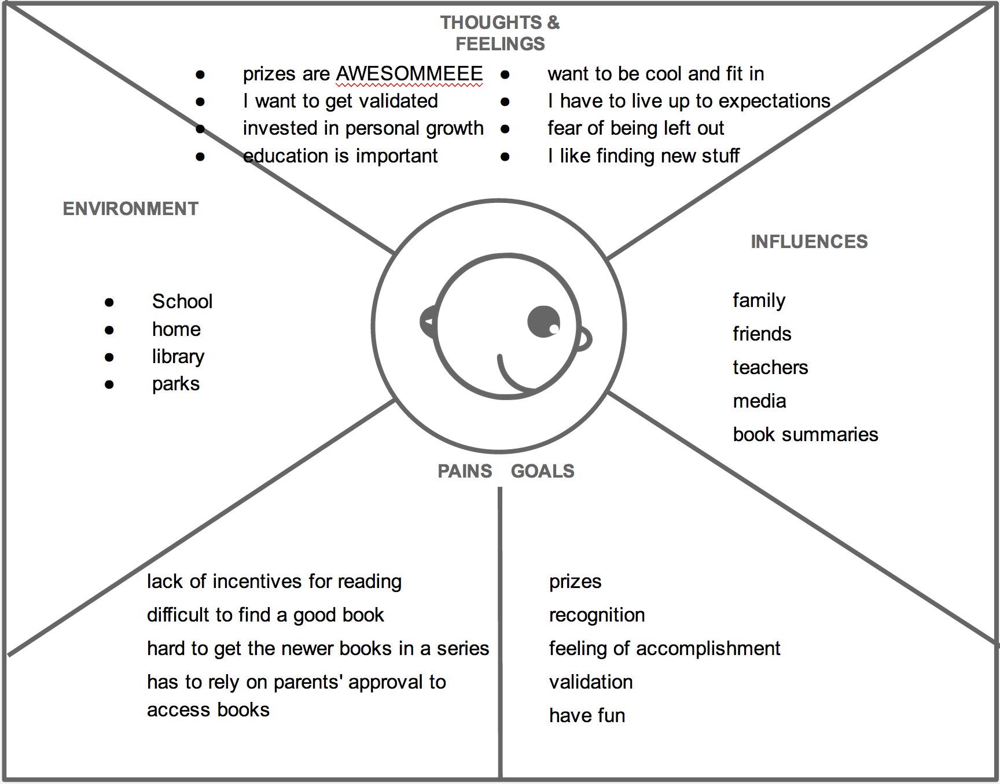
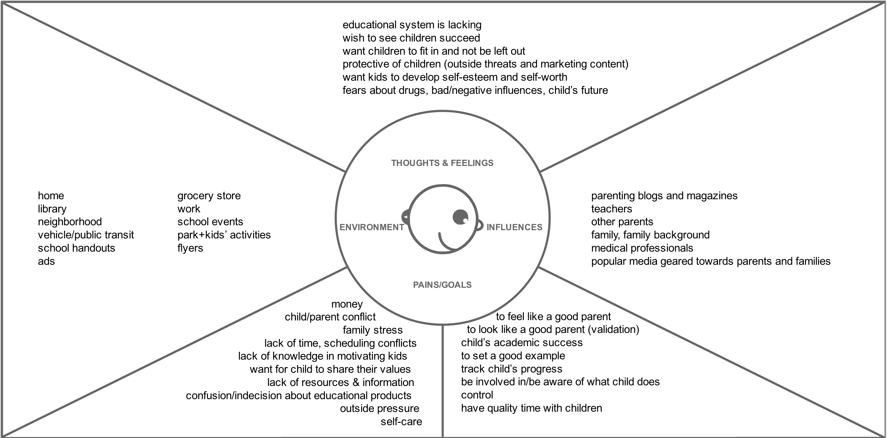
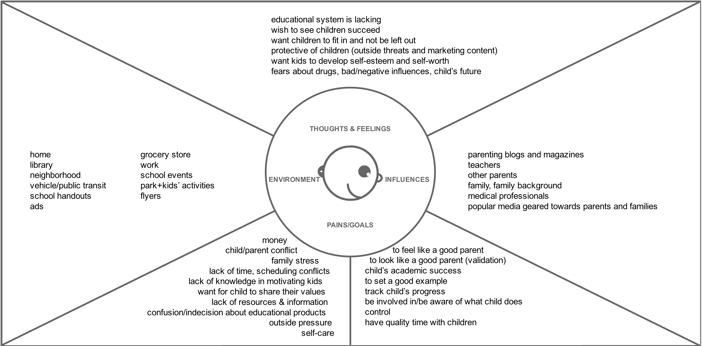
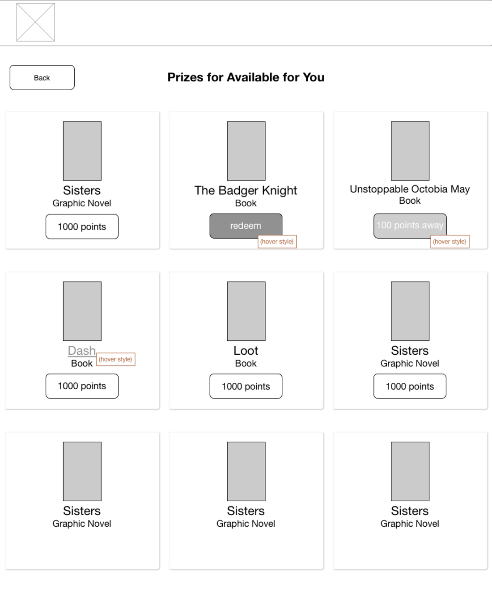

BookQuest

Challenge
We were tasked with creating a reading engagement product for Scholastic- edit with spec info
Duration
2 Weeks
Client
Scholastic was the assigned client for the student project during the User Experience Design Immersive at General Assembly, San Francisco 2014
My Role
User research, persona development, feature development, scope definition, project management, sketching and ideation, branding, presentation deck
Business Research
Competitive Analysis

- Scholastic is well known for the book fairs it holds at schools around the country
- Flyers showcasing products are sent home with students
- Based on online articles and interviews parents and teachers feel that Scholastic is marketing products without educational value
- Consumers worry that Scholastic is not encouraging children to read but to buy toys, posters, etc
According to our research, Scholastic appears to be incentivizing purchasing rather than actual reading
Findings:
- Few reading incentive programs combine assessments, web portal and prizes/ parent added prizes.
- Assessments that are present are in a traditional test format and focus on remembering trivia from the book
- Existing sites difficult to navigate
User Research
We visited a playground at Yerba Buena Center to conduct user interviews and sent out surveys to parents and teachers in our network
“The program should make sure kids actually read the books they said”
“There needs to be awesome prizes”
“She did a summer reading program, now she reads all the time”
There is a lot competing for children's time such as TV/ digital media and activities
“The programs were too easy to game”
Children use desktops more than tablet/mobile
[arrow]
Parents believe reading leads to success
Educational content and price are big concerns
Parents looking for ways to encourage reading
Persona Creation and Feature development
Using our research, we created empathy maps for our parent user and child user. This helped us develop our personas.
child persona
 parent persona

parent persona

child persona
 parent persona
parent persona

parent persona

